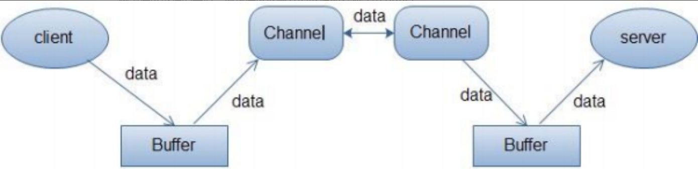

I/O流
I/O即Input/Output，输入和输出。数据输入到计算机内存的过程即输入，反之输出到外部存储（比如数据库，文件，远程主机）的过程即输出。
数据传输过程类似于水流，因此称为IO流。IO流在Java中分为输入流和输出流，而根据数据的处理方式又分为字节流和字符流。
Java IO流的40多个类都是从如下4个抽象类基类中派生出来的。
InputStream/Reader: 所有的输入流的基类，前者是字节输入流，后者是字符输入流。OutputStream/Writer: 所有输出流的基类，前者是字节输出流，后者是字符输出流。
I/O流为什么要分为字节流和字符流呢?
问题本质想问：不管是文件读写还是网络发送接收，信息的最小存储单元都是字节，那为什么I/O流操作要分为字节流操作和字符流操作呢？
主要有两点原因：
- 字符流是由
Java虚拟机将字节转换得到的，这个过程还算是比较耗时 - 如果我们不知道编码类型的话，使用字节流的过程中很容易出现乱码问题
I/O的模型
UNIX系统下，IO模型一共有5种：同步阻塞、同步非阻塞、多路复用、信号驱动和异步。
同步阻塞
最传统的一种IO模型，即在读写数据过程中会发生阻塞现象。
当用户线程发出IO请求之后，内核会去查看数据是否就绪，如果没有就绪就会等待数据就绪， 而用户线程就会处于阻塞状态，用户线程交出CPU。
当数据就绪之后，内核会将数据拷贝到用户线程，并返回结果给用户线程，用户线程才解除block状态。
典型的阻塞IO模型的例子为：data = socket.read();如果数据没有就绪，就会一直阻塞在read方法。
同步非阻塞
当用户线程发起一个read操作后，并不需要等待，而是马上就得到了一个结果。
如果结果是一个error时，它就知道数据还没有准备好，于是它可以再次发送read操作。
一旦内核中的数据准备好了，并且又再次收到了用户线程的请求，那么它马上就将数据拷贝到了用户线程，然后返回。
所以事实上，在非阻塞IO模型中，用户线程需要不断地询问内核数据是否就绪，也就说非阻塞IO不会交出CPU，而会一直占用CPU。
多路复用
多路复用IO模型是目前使用得比较多的模型。Java NIO实际上就是多路复用IO。
在多路复用IO模型中，会有一个线程不断去轮询多个socket的状态，只有当socket真正有读写事件时，才真正调用实际的IO读写操作。
因为在多路复用IO模型中，只需要使用一个线程就可以管理多个socket，系统不需要建立新的进程或者线程，
也不必维护这些线程和进程，并且只有在真正有socket读写事件进行时，才会使用IO资源，所以它大大减少了资源占用。
在Java NIO中，是通过selector.select()去查询每个通道是否有到达事件，如果没有事件，则一直阻塞在那里，因此这种方式会导致用户线程的阻塞。
多路复用IO模式，通过一个线程就可以管理多个socket，只有当socket真正有读写事件发生才会占用资源来进行实际的读写操作。
因此，多路复用IO比较适合连接数比较多的情况。
另外多路复用IO为何比非阻塞IO模型的效率高是因为在非阻塞IO中，不断地询问socket状态时通过用户线程去进行的，
而在多路复用IO中，轮询每个socket状态是内核在进行的，这个效率要比用户线程要高的多。
不过要注意的是，多路复用IO模型是通过轮询的方式来检测是否有事件到达，并且对到达的事件逐一进行响应。
因此对于多路复用IO模型来说，一旦事件响应体很大，那么就会导致后续的事件迟迟得不到处理，并且会影响新的事件轮询。
信号驱动
在信号驱动IO模型中，当用户线程发起一个IO请求操作，会给对应的socket注册一个信号函数，然后用户线程会继续执行，
当内核数据就绪时会发送一个信号给用户线程，用户线程接收到信号之后，便在信号函数中调用IO读写操作来进行实际的IO请求操作。
异步
异步IO模型才是最理想的IO模型，在异步IO模型中，当用户线程发起read操作之后，立刻就可以开始去做其它的事。
而另一方面，从内核的角度，当它受到一个asynchronous read之后，它会立刻返回，
说明read请求已经成功发起了，因此不会对用户线程产生任何block。
然后，内核会等待数据准备完成，然后将数据拷贝到用户线程，当这一切都完成之后，内核会给用户线程发送一个信号，告诉它read操作完成了。
也就说用户线程完全不需要实际的整个IO操作是如何进行的，只需要先发起一个请求，当接收内核返回的成功信号时表示IO操作已经完成，可以直接去使用数据了。
也就说在异步IO模型中，IO操作的两个阶段都不会阻塞用户线程，这两个阶段都是由内核自动完成，然后发送一个信号告知用户线程操作已完成。
用户线程中不需要再次调用IO函数进行具体的读写。
这点是和信号驱动模型有所不同的，在信号驱动模型中，当用户线程接收到信号表示数据已经就绪，然后需要用户线程调用IO函数进行实际的读写操作。
而在异步IO模型中，收到信号表示IO操作已经完成，不需要再在用户线程中调用IO函数进行实际的读写操作。
注意，异步IO是需要操作系统的底层支持，在Java 7中，提供了Asynchronous IO。
BIO、NIO、AIO
BIO
BIO属于同步阻塞IO模型。
在客户端连接数量不高的情况下，是没问题的。
但是，当面对十万甚至百万级连接的时候，传统的BIO模型是无能为力的。
因此，我们需要一种更高效的I/O处理模型来应对更高的并发量。
NIO
NIO属于多路复用IO模型。
NIO主要有三大核心部分：Channel(通道)，Buffer(缓冲区), Selector(选择区)。
传统IO基于字节流和字符流进行操作，而NIO基于Channel(通道)和Buffer(缓冲区)进行操作，数据总是从通道读取到缓冲区中，或者从缓冲区写入到通道中。
Selector(选择区)用于监听多个通道的事件（比如：连接打开，数据到达）。
因此，单个线程可以监听多个数据通道。
NIO和传统IO之间第一个最大的区别是，IO是面向流的，NIO是面向缓冲区的。
NIO的缓冲区
IO面向流意味着每次从流中读一个或多个字节，直至读取所有字节，它们没有被缓存在任何地方。
此外，它不能前后移动流中的数据。如果需要前后移动从流中读取的数据，需要先将它缓存到一个缓冲区。
NIO的缓冲导向方法不同。数据读取到一个它稍后处理的缓冲区，需要时可在缓冲区中前后移动。
这就增加了处理过程中的灵活性。但是，还需要检查是否该缓冲区中包含所有您需要处理的数据。
而且，需确保当更多的数据读入缓冲区时，不要覆盖缓冲区里尚未处理的数据。
NIO的非阻塞
IO的各种流是阻塞的。
这意味着，当一个线程调用read()或write()时，该线程被阻塞，直到有一些数据被读取，或数据完全写入。该线程在此期间不能再干任何事情了。
NIO的非阻塞模式，使一个线程从某通道发送请求读取数据，但是它仅能得到目前可用的数据，如果目前没有数据可用时，就什么都不会获取。
而不是保持线程阻塞，所以直至数据变的可以读取之前，该线程可以继续做其他的事情。
非阻塞写也是如此。一个线程请求写入一些数据到某通道，但不需要等待它完全写入，这个线程同时可以去做别的事情。
线程通常将非阻塞IO的空闲时间用于在其它通道上执行IO操作，所以一个单独的线程现在可以管理多个输入和输出通道（channel）。
Channel
Channel，大多翻译成通道。Channel和IO中的Stream(流)是差不多一个等级的。
只不过Stream是单向的，譬如：InputStream，OutputStream，而Channel是双向的，既可以用来进行读操作，又可以用来进行写操作。
NIO中的Channel的主要实现有：
FileChannelDatagramChannelSocketChannelServerSocketChannel
分别可以对应文件IO、UDP和TCP（Server和Client）。
Buffer
Buffer，翻译成缓冲区。实际上是一个容器，是一个连续数组。
Channel提供从文件、网络读取数据的渠道，但是读取或写入的数据都必须经由Buffer。

上面的图描述了从一个客户端向服务端发送数据，然后服务端接收数据的过程。
客户端发送数据时，必须先将数据存入Buffer中，然后将Buffer中的内容写入通道。
服务端这边接收数据必须通过Channel将数据读入到Buffer中，然后再从Buffer中取出数据来处理。
在NIO中，Buffer是一个顶层父类、抽象类
常用的Buffer的子类有：
ByteBufferIntBufferCharBufferLongBufferDoubleBufferFloatBufferShortBuffer
Selector
Selector，翻译成选择器。Selector是NIO的核心类，它用于监控Channel的就绪状态。
Selector能够检测多个注册的通道上是否有事件发生，如果有事件发生，便获取事件然后针对每个事件进行相应的响应处理。
这样一来，只是用一个单线程就可以管理多个通道，也就是管理多个连接。
这样使得只有在连接真正有读写事件发生时，才会调用函数来进行读写，就大大地减少了系统开销， 并且不必为每个连接都创建一个线程，不用去维护多个线程，并且避免了多线程之间的上下文切换导致的开销。
AIO
AIO属于异步IO模型。也是NIO 2
异步IO是基于事件和回调机制实现的，也就是应用操作之后会直接返回，不会堵塞在那里，当后台处理完成，操作系统会通知相应的线程进行后续的操作。
目前AIO真实使用的并不广泛，Netty之前也尝试使用过AIO，不过又放弃了。
AIO注册事件监听和执行回调是如何实现的？
以注册监听read为例clientChannel.read(...)
它主要的核心流程是：注册事件 -> 监听事件 -> 处理事件。
每一次IO读写都要经历的这三个事件是一次性的，也就是在处理事件完，本次流程就结束了，如果想继续下一次的IO读写，就得从头开始再来一遍。
这样就会存在所谓的死亡回调（回调方法里再添加下一个回调方法），这对于编程的复杂度大大提高了。
AIO的本质是什么？
AIO的本质，就是只在用户态实现了异步。
由于内核态无法直接调用用户态函数，Java AIO的本质，就是只在用户态实现异步，并没有达到理想意义上的异步。
理想中的异步
这里举个网购的例子。
两个角色，消费者A、快递员B：
A在网上购物时，填好家庭地址付款提交订单，这个相当于注册监听事件；
商家发货，B把东西送到A家门口，这个相当于回调。
A在网上下完单，后续的发货流程就不用他来操心了，可以继续做其他事。 B送货也不关心A在不在家，反正就把货扔到家门口就行了，两个人互不依赖，互不相干扰。
假设A购物是用户态来做，B送快递是内核态来做，这种程序运行方式过于理想了，实际中实现不了。
现实中的异步
A住的是高档小区，不能随意进去，快递只能送到小区门口。
A买了一件比较重的商品，比如一台电视，因为A要上班不在家里，所以找了一个好友C帮忙把电视搬到他家。
A出门上班前，跟门口的保安D打声招呼，说今天有一台电视送过来，送到小区门口时，请电话联系C，让他过来拿。
具体就是：
- 此时，A下单并跟D打招呼，相当于注册事件。在
AIO中就是EPoll.ctl(...)注册事件； - 保安在门口蹲着相当于监听事件，在
AIO中就是Thread-0线程，做EPoll.wait(..)； - 快递员把电视送到门口，相当于有
IO事件到达； - 保安通知C电视到了，C过来搬电视，相当于处理事件（在
AIO中就是Thread-0往任务队列提交任务，Thread-1 ~n去取数据，并执行回调方法）。
整个过程中，保安D必须一直蹲着，寸步不能离开，否则电视送到门口，就被人偷了。
好友C也必须在A家待着，受人委托，东西到了，人却不在现场，这有点失信于人。
所以实际的异步和理想中的异步，在互不依赖，互不干扰，这两点相违背了。保安的作用最大，这是他人生的高光时刻。
异步过程中的注册事件、监听事件、处理事件，还有开启多线程，这些过程的发起者全是用户态一手操办。所以说Java AIO本质只是在用户态实现了异步，这个和BIO、NIO先阻塞，阻塞唤醒后开启异步线程处理的本质一致。
AIO的总结
Java AIO跟NIO一样：在各个平台的底层实现方式也不同，
在Linux是用epoll、Windows是IOCP、Mac OS是KQueue。
原理是大同小异，都是需要一个用户线程阻塞等待IO事件，一个线程池从队列里处理事件。
Netty之所以移除掉AIO：很大的原因是在性能上AIO并没有比NIO高。
Linux虽然也有一套原生的AIO实现（类似Windows上的IOCP），但Java AIO在Linux并没有采用，而是用epoll来实现。
Java AIO不支持UDP。
AIO编程方式略显复杂，比如死亡回调。
IO的使用场景
以下是一些常见的开源组件和框架，它们使用了不同的I/O模型：
Nginx：使用事件驱动的I/O多路复用模型，通过epoll或kqueue实现高并发的网络通信。Node.js：使用非阻塞I/O模型和事件驱动架构，基于JavaScript运行时环境实现高性能的I/O操作。Netty：一个基于Java NIO的异步事件驱动的网络应用框架，适用于快速开发高性能的网络通信程序。Apache MINA：一个基于Java NIO的网络应用框架，提供了高性能的网络通信解决方案。libuv：一个跨平台的异步I/O库，最初由Node.js使用，后来也被其他项目采用。Redis：使用多路复用模型和非阻塞I/O，实现高性能的内存数据库服务。Kafka：使用了多路复用模型和异步I/O，为分布式流处理平台提供了高吞吐量的消息传递功能。